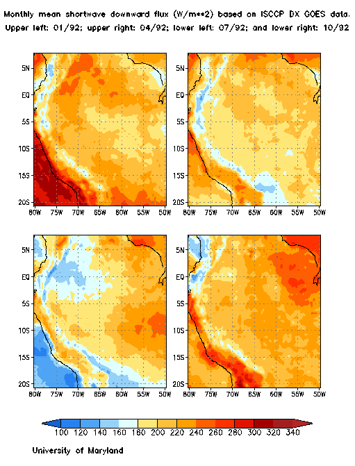

PC-02 Group Augmented Abstract

Surface Radiation Budgets for LBA
Principal Investigator:
Rachel T. Pinker
Department of Meteorology
University of Maryland
College Park, MD 20742
Tel: 301-405-5380
FAX: 301-314-9482
e-mail: pinker@atmos.umd.edu
homepage: http://www.meto.umd.edu/~pinker/
Brazilian Collaborators:
Juan Carlos Ceballos
Grupo de Aplicacoes de Satelites Meteorologicos
CPTEC - INPE, Cachoeira Paulista
Brazil
Enio Bueno Pereira
INPE - C. Postal 515
12201-970 S.J.Campos, SP BRAZIL
Tel: (012) 345-6741 Fax: (012) 345-6810
Sergio Colle
Departmento de Engenharia Mecania
Federal University of Santa Catarina
P. O. Box 476
Florianopolis 88049-999-SC
Brazil
The objectives of our participation in LBA-Hydrometeorology are:
|
Provide information on radiative fluxes that is required for advancing
the understanding of the role of water in land-atmosphere interactions;
this will include the total shortwave radiative fluxes, as well as Photosynthetically
Active Radiation ( PAR) and Near-Infra-Red (NIR) radiation. This information
will be provided at both boundaries of the atmosphere, namely, at the top
of the atmosphere and at the earth's surface. | |
| Develop improved techniques for providing such information, that take into account deforestation and biomass burning in the Amazon Basin. Availability of shortwave radiative fluxes at both boundaries of the atmosphere will allow estimation of the contribution of smoke to the solar heating of the atmospheric column. |
Initially, we will provide historical information on surface and top of the atmosphere radiative fluxes, both on global and regional scales, to help the modeling community synthesize their current hydrological models and improve their capabilities to test scientific issues of concern to the hydrology component of LBA. Historical radiative fluxes will be produced as part of an ongoing EOS PATHFINDER activity. Under the current project, they will be prepared to meet the needs of the LBA investigators.
New activities will be initiated to 1) improve existing capabilities to derive surface and top of the atmosphere radiative fluxes by incorporating unique conditions that exist over the Amazon Basin, particularly in respect to deforestation and biomass burning; and 2) implement these improved methodologies at spatial and temporal scales of interest to the hydrological and ecological modeling community. This aspect of our activity will be directly related to activities anticipated during the LBA experiment, and will utilize results from the Ecology module of the LBA Project.
Specifically, we plan to improve the characterization of surface conditions in the radiative retrieval scheme. We will account for effects of deforestation, and also include better detection of smoke from biomass burning and thus more accurate modeling in terms of its aerosol effects. "Ground truth" on surface radiative fluxes will be collected by independent investigators and used to test our algorithm in this unique environment, where high quality ground truth is almost non-existent.
In the context of the list of LBA-Hydrometeorology research priorities, the information that will result from this project will lead to consideration of the following issues:
Priority topic 1: Global scale hydrometeorology
|
Evaluation of land surface parameterization and the implications for global climate and weather forecast models |
Priority topic 2: Continental and regional scale hydrometeorology
|
Estimation of the surface hydrological and energy budgets at regional and
continental scales |
|
Modeling and prediction of the surface hydrological and energy budgets
of the LBA region on time scales from diurnal to interannual |
|
Development and testing of improved algorithms to predict surface radiation
budgets that take into account deforestation in Rondonia and information
on biomass burning in the Amazon Basin |
|
Documentation of regional and continental energy and water cycles within
the LBA Project |
Priority topic 3: Mesoscale hydrometeorology
|
Enhancement of the understanding of mesoscale convective and/or land surface processes |
Priority topic 4: Regional and continental scale surface hydrology
|
Demonstration of the use of remotely sensed hydrometeorological variables in connection with models of land surface fluxes. |
An example on the distribution of monthly mean surface shortwave radiative fluxes for four mid-season months during 1992 are illustrated in Figure 1. They are given at a resolution of 0.5 degree, and are available at 3-hourly intervals, on daily time scales. The area covered was selected to include all the various basins, as illustrated in Figure 2, taken from http://lba-dev.gsfc.nasa.gov:85/lbahydromet/about/abstracts/pc06/pc06ab.htm
Note: Feedback is requested from LBA investigators as to the spatial coverage needed for their studies that require information on radiative fluxes.
Figure 1.

Figure 2.